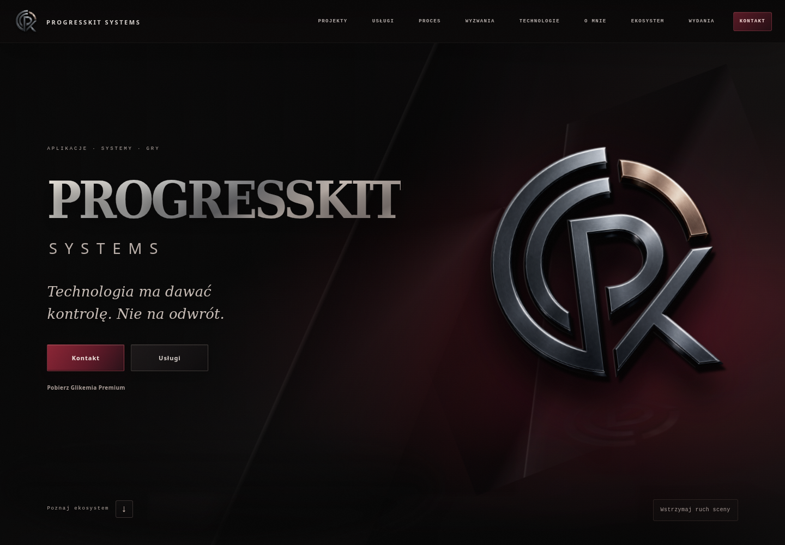
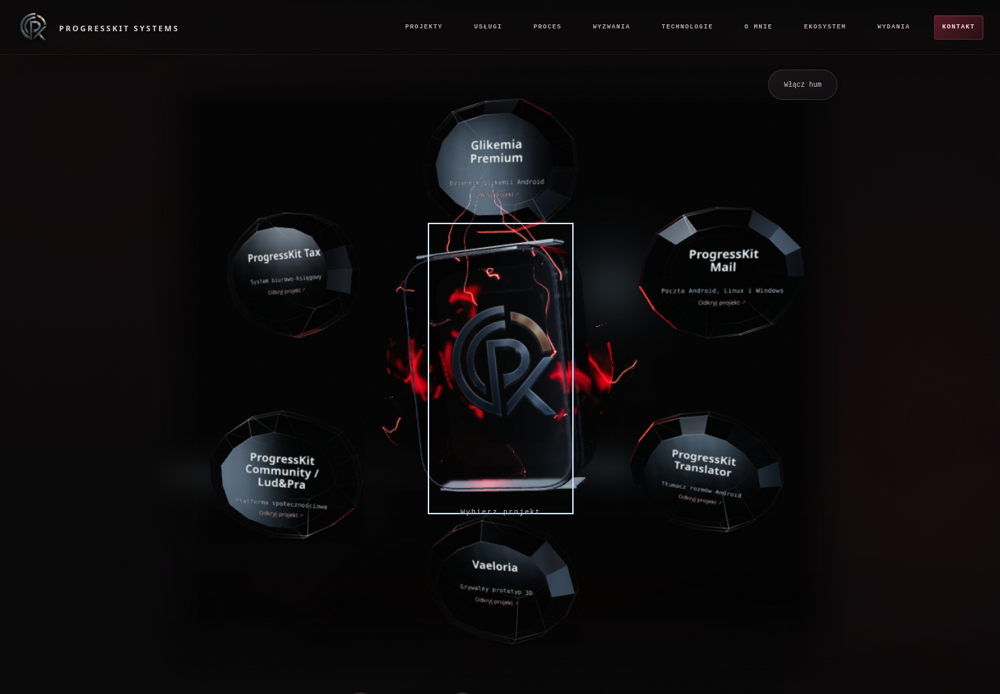
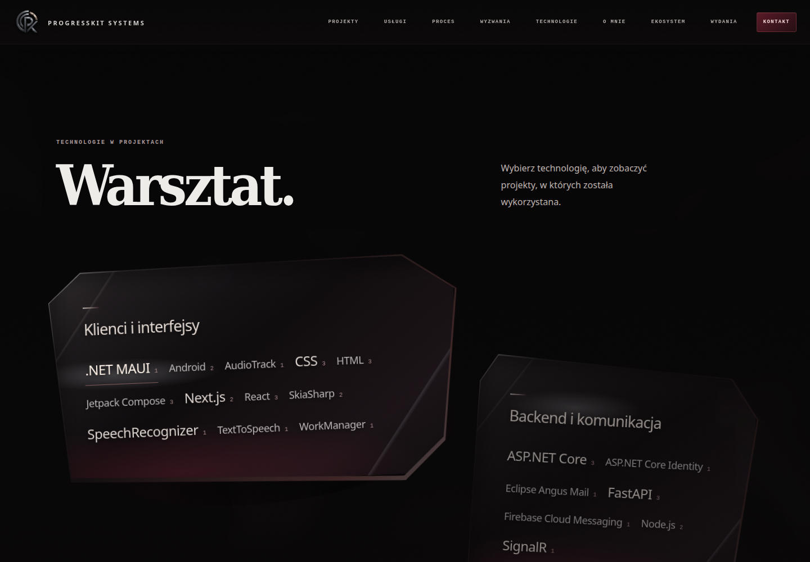
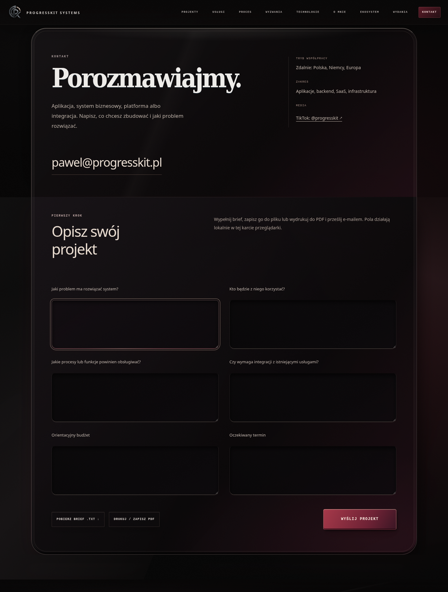

OWNER VISUAL APPROVAL: OPEN · LOKALNY PROOF
Ten sam układ, treści i świat ProgressKit. Zróżnicowane cienie, punktowe refleksy i płynący haze w istniejącej warstwie atmosferycznej. Materiały z rzeczywistej lokalnej przeglądarki.




Bez commita, pushu i publikacji. Nagrania bez audio; mobile to emulacja viewportu i dotyku. Haze omija tekst i kontrolki, a podczas aktualizacji masek może na chwilę znikać.